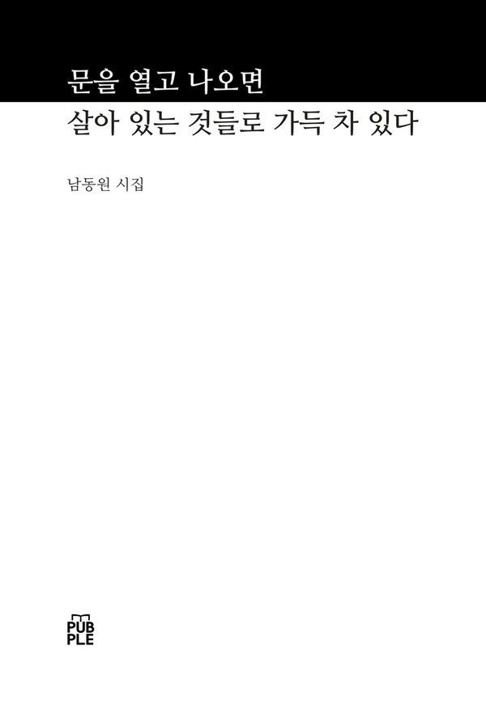
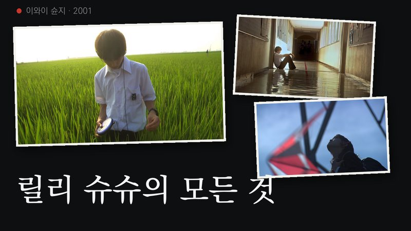

남동원 첫 시집 · 웹 전시
문을 열고
나오면
살아 있는 것들로
가득 차 있다

소개
남동원
보는 것을 리뷰하는, 시를 쓰는 회사원
1995년 겨울, 서울에서 태어났다. 2026년 첫 시집 『문을 열고 나오면 살아 있는 것들로 가득 차 있다』로 작품 활동을 시작했다.
- 1995겨울, 서울에서 태어남
- 2013영화 기록 시작1
- 2023전시 기록 시작2
- 2024미술 공부 시작
- 2026첫 시집
- 2026유튜브 ‘아름다울 남’
- 1처음 적은 세 편 — 〈어거스트 러쉬〉 · 〈올드보이〉 · 〈28일 후〉, 2013년 11월 18일
- 2그해 처음 적은 전시 — 마우리치오 카텔란 《WE》, 리움미술관, 2023년 6월 27일
지금· 상강 무렵2026년 10월 25일 고침
- 편집 중인 편
- 영화 〈릴리 슈슈의 모든 것〉 — 아름다울 남 첫 편
1,117편 · 2013년부터 기록한 영화
438개 · 2023년부터 기록한 전시
시집
「탁본」
문을 열고 나오면 살아 있는 것들로 가득 차 있다숨 쉬는 것들
움직이는 것들과 다르다죽어 있는 것도 움직일 수 있다
건조하겠지지나치게 건조하겠지
건물의 벽을 만져 본다버석하게 무언가 떨어진다물기 하나 없이 검은 인주를 찍은 듯하다
오래됐네
바람에 밀려가는 쓰레기나일정한 속도로 굴러가는 바퀴들
살아 있는 척할까죽어 있는 척할까
손에 묻은 인주를 털어낸다
바람이 분다이제 걸음을 옮긴다
「탁본」 — 61–62쪽
살아 있는 척과 죽어 있는 척 사이에서
손에 묻은 인주를 털고 걸음을 옮기는 시
남동원의 시는 숨 쉬는 것과 움직이기만 하는 것을 가려 본다. 만지면 무언가 버석하게 떨어지는 건물 벽, 바람에 밀려가는 쓰레기, 일정한 속도로 굴러가는 바퀴들 사이에서 시인은 살아 있는 척할지, 죽어 있는 척할지 묻는다. 그리고 답 대신 손에 묻은 인주를 털어낸다. 감정을 앞세우지 않고 본 것을 적는 단단한 문장이 이 시집의 바탕이다.
차례 — 예순 편, 네 부
먹 줄은 사이트에서 읽을 수 있는 시 — 달마다 한 편씩 한 행이 열립니다
1부
- 흰 잠11
- 시야13
- 가라앉지 않는 무게14
- 통증이 있습니까16
- 유리17
- 소실점18
- 소나19
- 안내21
- 달빛 별빛22
- 들렸으면 했던 작은 소리24
- 엉겅퀴25
- 생의 박동26
- 파란빛28
- 관람30
- 문지방32
2부
- 빈 팔에 남은 하루37
- 경사38
- 틈새39
- 시계40
- 놀이41
- 각도42
- 검침44
- 점등45
- 조각46
- 수조47
- 이빨 사이49
- 그냥50
- 필적52
- 일상의 저녁54
- 오래전56
3부
- 탁본61
- 유예63
- 만개64
- 지각66
- 번호순68
- 겉, 속69
- 고흐70
- 직면72
- 역류73
- 기수74
- 고깔해파리75
- 복숭아77
- 밑줄78
- 오후 네 시79
- 편도80
4부
- 활자83
- 학교84
- 마지막 아침에85
- 여백지87
- 기억89
- 혼색90
- 문법91
- 손바닥93
- 길에서95
- 눈 폭폭97
- 꽃받침98
- 못100
- 뒷모습102
- 가벼운 것은103
- 우연히105
- 시인의 말107
- 읽어 주신 분들께108
인스타그램
유튜브

준비 중영화 〈릴리 슈슈의 모든 것〉 이와이 슌지. 2001. 일본.
스틸: Film Movement 보도 자료
유튜브 채널 보기 ↗지난 편
편이 쌓이면 여기에 차례로 남습니다.
연락
연락
협업이나 궁금한 것은
아래에 남겨 주세요.
namdongwon.github.io
- 고친 날
- · 2판 7쇄
- 지은이
- 남동원
- 만든 곳
- 서울에서 쓰고, 찍고, 엮음
- 글꼴
- 본명조 · Pretendard — 쓰인 글자만 담음 · 약 270KB
© 2026 남동원
글과 사진을 다시 쓰려면 먼저 물어 주세요.
쿠키를 쓰지 않습니다.